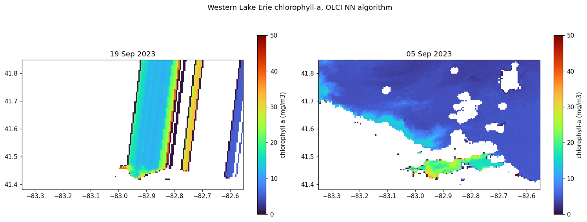
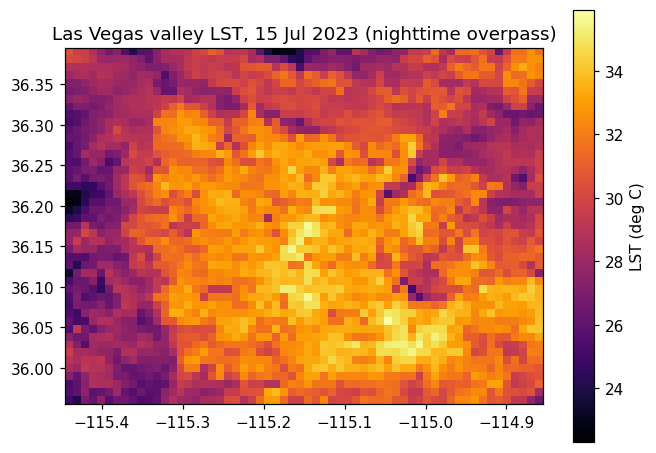
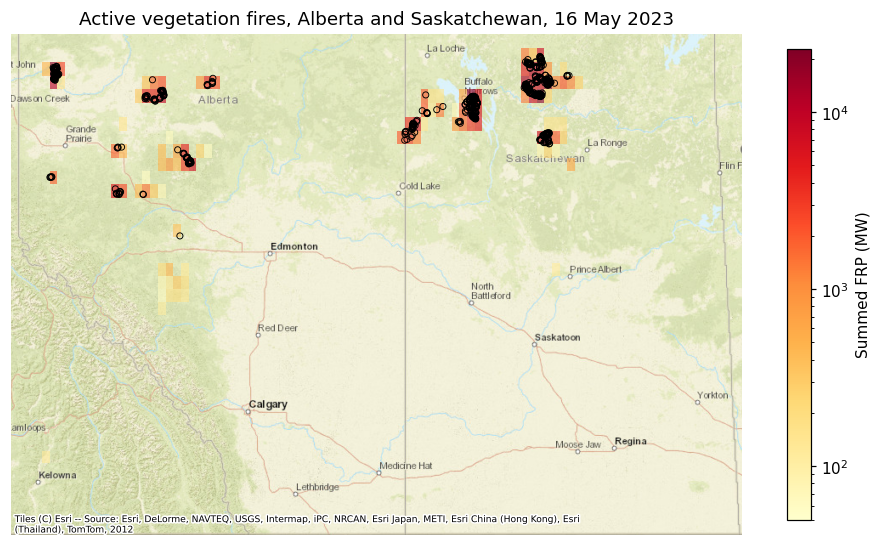

Sentinel-3: Ocean Colour, Surface Temperature and Altimetry
Sentinel-3 (Copernicus, ESA/EUMETSAT) is four instruments on one platform: OLCI for ocean and land colour, SLSTR for sea and land surface temperature and fire, SRAL for sea-surface height, and a microwave radiometer that corrects the altimeter.
Overview
Two satellites in orbit give global ocean coverage in under two days. This module works with real OLCI and SLSTR products downloaded live from Microsoft Planetary Computer.
Core concepts
Learning objectives
Know the four Sentinel-3 instruments, their products, and the NRT/STC/NTC timeliness levels.
Decode any Sentinel-3 quality flag from its own flag_masks/flag_meanings metadata, rather than a hardcoded bit position.
Read and mask a real OLCI Level-2 water product, and understand why a standard ocean flag can misbehave over turbid inland water.
Back-transform a log-scaled chlorophyll product and resample it from swath to a regular grid.
Read and mask a real SLSTR Level-2 land surface temperature product.
Read SLSTR fire radiative power, keep vegetation fires, and map where forest was actively burning.
Know when a land-targeted index (OTCI) breaks down outside its intended domain.
Contents
The mission
Platforms
Sensors
Spectral bands
Data products
Applications
Where to get the data
Swath products
Data
Setup
The Sentinel-3 product family and the CF flag convention
Downloading a real OLCI water product
Reading and masking OLCI L2 water data
Chlorophyll retrieval: log back-transform and swath-to-grid
Mapping a harmful algal bloom
SLSTR land surface temperature
Active forest fires in western Canada
Terrestrial chlorophyll indices, in and out of their domain
Summary, exercises and references
The mission
Sentinel-3 is the Copernicus mission for global ocean, land, ice, and atmosphere monitoring. It measures: - Sea surface temperature, ocean colour, and sea level - Land cover and other environmental indicators for climate monitoring - Heritage. Sentinel-3 continues observations from earlier ESA and French missions: - Envisat (2002 to 2012): MERIS (ocean colour), AATSR (surface temperature), and RA-2 (altimetry) - ERS-1 and ERS-2: ATSR series - SPOT-VEGETATION and PROBA-V: vegetation monitoring, continued through Sentinel-3’s synergy products - Development. ESA develops the satellites on behalf of the European Commission. Thales Alenia Space is the prime contractor. - Operations split - EUMETSAT flies the satellites and produces the marine products. - ESA produces the land products. - Launch timeline - Sentinel-3A launched on 16 February 2016 on a Rockot from Plesetsk, Russia. - Sentinel-3B launched on 25 April 2018, also on a Rockot. - Sentinel-3C launched on 15 September 2026 on a Vega C from Kourou (mission VV30), sharing the ride with ESA’s FLEX fluorescence satellite. It returned its first images in late September 2026 and is currently in commissioning. - Sentinel-3D is planned for 2028. - A next-generation mission is planned for the 2030s: Sentinel-3 Next Generation Optical, plus a separate topography mission.
Platforms
Constellation. Two satellites operate together. Sentinel-3A and 3B fly in the same orbit about 140° apart. Sentinel-3C will join them and eventually take over from 3A.
Spacecraft. About 1,150 kg each, with a design life of about 7 years and fuel for roughly 12.
Orbit
Sun-synchronous at about 815 km altitude.
Equatorial crossing at 10:00 a.m. local time (descending node). The early-morning crossing reduces cloud and sun-glint effects over the ocean.
27-day repeat cycle, which is set by the altimetry ground track.
Revisit with two satellites
OLCI: less than 2 days globally, and about daily at mid-latitudes.
SLSTR: about daily in the dual view, and better than daily in the nadir view.
Altimetry: 27-day repeat. With two satellites, the tracks are interleaved, which gives a denser spatial grid of measurements.
Sensors
Each satellite carries four main instrument packages.
1. Ocean and Land Colour Instrument (OLCI) - Push-broom imaging spectrometer that succeeds MERIS. - 21 bands from 400 to 1020 nm. - Resolution: 300 m in Full Resolution (FR) mode; 1.2 km in Reduced Resolution (RR) mode. - 1,270 km swath from 5 cameras. The view is tilted 12.6° westward to reduce sun glint.
2. Sea and Land Surface Temperature Radiometer (SLSTR) - Dual-view conical scanner that succeeds AATSR. - 9 spectral bands plus 2 dedicated fire channels. - Resolution: 500 m in the visible/SWIR; 1 km in the thermal infrared. - Two views of each location: - Nadir view with a 1,400 km swath - Oblique (backward) view with a 740 km swath - Combining the two views gives very accurate atmospheric correction for sea surface temperature, accurate to about 0.3 K.
3. Synthetic Aperture Radar Altimeter (SRAL) - Dual-frequency radar altimeter (Ku-band at 13.575 GHz and C-band at 5.41 GHz). - Operates in SAR (delay-Doppler) mode with about 300 m along-track resolution, which makes it suitable for coastal zones, rivers, lakes, and sea ice.
4. Supporting packages - Microwave Radiometer (MWR). Measures at 23.8 and 36.5 GHz to correct the altimeter for atmospheric water vapour (wet troposphere correction). - Precise Orbit Determination (POD). GNSS receiver, DORIS, and a laser retroreflector, giving orbits accurate to the centimetre for sea-level measurement.
Spectral bands
OLCI (21 bands; 300 m FR / 1.2 km RR)
Band
Centre (nm)
Width (nm)
Main use
Oa01
400
15
Aerosol, improved water constituent retrieval
Oa02
412.5
10
Yellow substance (CDOM), detritus
Oa03
442.5
10
Chlorophyll absorption maximum
Oa04
490
10
High chlorophyll, other pigments
Oa05
510
10
Chlorophyll, sediment, turbidity, red tide
Oa06
560
10
Chlorophyll reference (minimum absorption)
Oa07
620
10
Sediment loading, phycocyanin
Oa08
665
10
Chlorophyll (second absorption maximum), sediment
Oa09
673.75
7.5
Improved fluorescence retrieval
Oa10
681.25
7.5
Chlorophyll fluorescence peak, red edge
Oa11
708.75
10
Fluorescence baseline, red edge
Oa12
753.75
7.5
O₂ absorption reference, cloud, vegetation
Oa13
761.25
2.5
O₂ absorption (cloud top pressure, aerosol)
Oa14
764.375
3.75
Atmospheric correction
Oa15
767.5
2.5
O₂ A-band (cloud top pressure, fluorescence)
Oa16
778.75
15
Atmospheric correction, aerosol, vegetation
Oa17
865
20
Atmospheric correction, cloud, vegetation
Oa18
885
10
Water vapour reference, vegetation
Oa19
900
10
Water vapour absorption
Oa20
940
20
Water vapour absorption
Oa21
1020
40
Atmospheric correction, aerosol
SLSTR (9 bands plus 2 fire channels)
Band
Centre (µm)
Resolution
Main use
S1
0.555
500 m
Cloud screening, vegetation
S2
0.659
500 m
NDVI, vegetation, aerosol
S3
0.865
500 m
NDVI, cloud, pixel co-registration
S4
1.375
500 m
Cirrus detection
S5
1.610
500 m
Cloud clearing, ice, snow, vegetation moisture
S6
2.250
500 m
Vegetation state, cloud clearing
S7
3.74
1 km
Sea and land surface temperature, active fire
S8
10.85
1 km
Sea and land surface temperature, active fire
S9
12.0
1 km
Sea and land surface temperature
F1
3.74
1 km
Active fire (high saturation level)
F2
10.85
1 km
Active fire
Common indices: - OTCI (OLCI Terrestrial Chlorophyll Index) = (Oa12 − Oa11)/(Oa11 − Oa10) - NDVI from OLCI = (Oa17 − Oa08)/(Oa17 + Oa08) - Maximum Chlorophyll Index (MCI) uses Oa10 to Oa12, for detecting algal blooms.
Data products
Timeliness categories: - NRT (Near Real Time): within 3 hours. - STC (Short Time Critical): within 48 hours. Used for altimetry. - NTC (Non Time Critical): within about 1 month. Best quality; recommended for science.
Instrument
Level
Product
Content
OLCI
L1B
OL_1_EFR / OL_1_ERR
TOA radiances at 300 m / 1.2 km
L2 Land
OL_2_LFR / OL_2_LRR
GIFAPAR (formerly OGVI), OTCI, integrated water vapour, rectified reflectance
Radiances and brightness temperatures, nadir and oblique views
L2 Land
SL_2_LST
Land surface temperature (1 km)
L2 Marine
SL_2_WST
Sea surface temperature (GHRSST L2P format)
L2
SL_2_FRP
Fire radiative power (active fires)
L2
SL_2_AOD
Aerosol optical depth
SRAL/MWR
L1/L2
SR_1_SRA, SR_2_WAT (marine), SR_2_LAN (land)
Sea surface height, significant wave height, wind speed, inland water height, sea ice freeboard, land ice elevation
Synergy (OLCI + SLSTR)
L2
SY_2_SYN
Surface reflectance and AOD at 300 m
L2
SY_2_VGP, SY_2_VG1, SY_2_V10
VEGETATION-like products (1-day and 10-day composites); continuity with SPOT-VGT and PROBA-V
Format. SAFE container with NetCDF-4 files, plus an xfdumanifest.xml file.
Geometry. Level-1 and Level-2 products are delivered in instrument geometry with latitude/longitude arrays. They are not map-projected, so you need to reproject them, for example with SNAP or satpy.
Naming. File names follow the pattern S3A_OL_1_EFR____<start>_<stop>_.... The fields encode the satellite, instrument, level, and product.
Near-real-time satellite broadcast of marine products
Copernicus Marine Service (marine.copernicus.eu)
Gridded L3/L4 ocean colour, SST, and sea level
Copernicus Land Monitoring Service
LST, vegetation, and water bodies
Google Earth Engine
COPERNICUS/S3/OLCI (OLCI L1B EFR radiances only)
NASA Ocean Biology DAAC (oceancolor.gsfc.nasa.gov)
OLCI data reprocessed with NASA algorithms
Software and Python tools: - SNAP Sentinel-3 Toolbox (ESA): reprojection, mosaicking, C2RCC water processing - satpy and pyresample: reading and reprojecting swath data - eumdac: EUMETSAT Data Store API - xarray with netCDF4 or h5netcdf: reading product files - openeo and sentinelhub: cloud processing - pystac-client: STAC search on CDSE
Practical tips: - Use NTC products for research. - Apply the quality flags in each product: - WQSF for OLCI water products - LQSF for OLCI land products - Confidence and cloud flags for SLSTR - Reproject from swath geometry before combining with gridded data. - For land work at higher spatial resolution, pair Sentinel-3 with Sentinel-2 or Landsat.
GeoLattice provides reader, flag-decoding and swath-to-grid regridding functions for Sentinel-3’s OLCI, SLSTR, SRAL and Synergy products through geolattice.rsense.optical.sensors.sentinel3. Unlike the other optical sensors in this module, Sentinel-3 products are NetCDF-4 files in satellite swath geometry rather than georeferenced COGs, so this notebook downloads real product files directly from Microsoft Planetary Computer’s STAC catalogue and works with them using the standard Sentinel-3 workflow: read, mask by quality flags, convert units, then resample from swath to a map grid.
Data
Dataset
Content
OLCI L2 WFR, downloaded live from Planetary Computer
2 dates (5 and 19 September 2023), western Lake Erie, late-summer harmful algal bloom season
SLSTR L2 LST, downloaded live from Planetary Computer
1 date (15 July 2023, nighttime overpass), Las Vegas valley
SLSTR L2 FRP, downloaded live from Planetary Computer
16 May 2023, Alberta and Saskatchewan, early peak of the 2023 wildfire season
Setup
Installation. This notebook needs installation option 5 (core, spatial analysis, spatial statistics, geostatistics and remote sensing): pip install "geolattice[remote-sensing]". See “Installation options” in the GeoLattice README.
Code
import warnings # warning controlwarnings.filterwarnings("ignore", category=UserWarning) # hide routine library warningswarnings.filterwarnings("ignore", category=RuntimeWarning) # e.g. "mean of empty slice" in all-NaN areasimport json # read metadatafrom pathlib import Path # file pathsimport numpy as np # arraysimport pandas as pd # tablesimport xarray as xr # labelled rasters (Sentinel-3 products are NetCDF)import matplotlib.pyplot as plt # figuresimport requests # download files over HTTPimport pystac_client # STAC search clientimport planetary_computer as pc # signs Planetary Computer URLsimport geolattice.rsense as rs # GeoLattice remote sensingfrom geolattice.rsense.optical.sensors import sentinel3 as s3 # Sentinel-3 readers, flags and FRP toolsfrom geolattice.network import is_online # internet checkplt.rcParams.update({"figure.dpi": 110}) # figure resolutionONLINE = is_online("https://planetarycomputer.microsoft.com/api/stac/v1") # can Planetary Computer be reached?print("geolattice.rsense", rs.__version__, "| backend:", rs.set_backend("cpu"), # version and backend"| Planetary Computer reachable:", ONLINE)# The notebook's data folder: ../../../../Data/08_remote_sensing/08_02_optical/ next to this notebook, found from here or from the repository root.DATA =next((p for p in (Path("Data/08_remote_sensing/08_02_optical"), Path("../../../../Data/08_remote_sensing/08_02_optical"))if p.is_dir()), Path("../../../../Data/08_remote_sensing/08_02_optical"))DATA.mkdir(exist_ok=True) # create it if needed# open the Planetary Computer STAC catalogue (with URL signing)CATALOG = pystac_client.Client.open("https://planetarycomputer.microsoft.com/api/stac/v1", modifier=pc.sign_inplace)def local_scenes(folder, files=()):"""Scene folders already downloaded under `folder` that contain every file in `files`.""" folder = Path(folder)ifnot folder.is_dir(): # nothing downloaded yetreturn []returnsorted(p for p in folder.iterdir() if p.is_dir() andall((p / f).exists() for f in files))
geolattice.rsense 0.2.0.dev0 | backend: cpu | Planetary Computer reachable: True
The Sentinel-3 product family and the CF flag convention
Every geolattice.rsense.optical.sensors.sentinel3 reader takes a folder path (an extracted .SEN3 product) and returns the variables you need under short, canonical lowercase names. The table below is the same product list from the Overview, alongside the geolattice.rsense reader and mask function each one uses. Every mask function works the same way underneath: it reads the matching flag variable’s flag_masks and flag_meanings attributes and excludes the named bits, so the same decode_flags/flag_mask logic covers products whose bit layouts differ completely.
Decoding a flag never requires knowing which bit means what in advance. decode_flags reads every named bit straight from the variable’s own metadata, and flag_mask builds a boolean “keep this pixel” array from a list of flag names to exclude:
Code
help(s3.decode_flags) # documentation of the flag decoderhelp(s3.flag_mask) # documentation of the flag-mask helper
Help on function decode_flags in module geolattice.rsense.optical.sensors.sentinel3:
decode_flags(flag: 'xr.DataArray') -> 'dict[str, xr.DataArray]'
Every named bit of a Sentinel-3 flag variable, read from its own metadata.
Uses the variable's ``flag_masks`` and ``flag_meanings`` attributes (CF convention),
never a hardcoded bit position, since the bit layout differs by product and baseline.
Help on function flag_mask in module geolattice.rsense.optical.sensors.sentinel3:
flag_mask(flag: 'xr.DataArray', exclude: 'Iterable[str]', *, match: 'str' = 'exact') -> 'xr.DataArray'
Boolean validity mask (``True`` = usable) excluding the named flags.
``match="exact"`` requires the flag meaning to equal an entry in ``exclude``;
``match="contains"`` excludes a flag if any entry in ``exclude`` is a substring of its
name (handy for SLSTR, whose per-channel flags are named e.g. ``cloud_in``).
Downloading a real OLCI water product
Western Lake Erie develops seasonal harmful algal blooms (HABs) most summers, driven by agricultural runoff into the Maumee River. We search Planetary Computer’s sentinel-3-olci-wfr-l2-netcdf collection for two late-summer 2023 dates and download the real product files for each: the default water variables, the WQSF quality flag, and the pixel geolocation (geo_coordinates.nc), reproducing the structure of an extracted .SEN3 folder on disk so the reader functions below work exactly as they would on a manually downloaded product. One date also gets three OLCI reflectance bands (Oa10, Oa11, Oa12) for the Terrestrial chlorophyll indices, in and out of their domain section.
Code
# Define the geographical bounding box for the area of interest: Western Lake Erie open water.ERIE_BBOX = (-83.35, 41.38, -82.55, 41.85) # List of dates we want to download Sentinel-3 OLCI water products for.OLCI_DATES = ["2023-09-05", "2023-09-19"]# Key OLCI water variables to extract for analysis.WATER_VARS = ["chl_oc4me", "chl_nn", "tsm_nn", "trsp", "iop_nn"]# OLCI reflectance bands (used in later sections, only required for the first date).OA_BANDS = ["oa10", "oa11", "oa12"] # Output directory where downloaded data will be stored.S3_OUT = DATA /"s3_erie_2023"# scene folders that already hold every water variable plus the flags and geolocationerie_local = local_scenes(S3_OUT, [f"{v}.nc"for v in WATER_VARS] + ["wqsf.nc", "geo_coordinates.nc"])iflen(erie_local) >=len(OLCI_DATES): # one folder per date is on diskprint("Reading the OLCI scenes already downloaded under", S3_OUT) # use the local driveelif ONLINE: # not on disk yet: download when online# Search the Planetary Computer STAC catalog for Sentinel-3 OLCI L2 water products# over the given bounding box and date range. search = CATALOG.search( collections=["sentinel-3-olci-wfr-l2-netcdf"], bbox=ERIE_BBOX, datetime="2023-09-01/2023-09-20", limit=20 )# Index the search results by their observation date. items = {it.datetime.date().isoformat(): it for it in search.items()}for i, d inenumerate(OLCI_DATES): # every OLCI date it = items[d] # Get search item for target date. scene_dir = S3_OUT / it.id# Create a separate folder for each product. scene_dir.mkdir(exist_ok=True, parents=True) # its folder# Create a mapping of asset keys to their destination filenames for water variables. assets = {f"{v.replace('_', '-')}": f"{v}.nc"for v in WATER_VARS}# Always add quality flags and geolocation files. assets.update({"wqsf": "wqsf.nc", "geo-coordinates": "geo_coordinates.nc"})# For the first date, also download the reflectance bands.if i ==0:# the reflectance NetCDF of every band assets.update({b: f"Oa{b[2:]}_reflectance.nc"for b in OA_BANDS})# Download each asset file if it's not already present.for key, fname in assets.items(): dest = scene_dir / fname # local fileif dest.exists(): # skip files already downloadedcontinue# Skip if already downloaded. r = requests.get(it.assets[key].href, timeout=60) # download the asset r.raise_for_status() # Raise an error on connection/HTTP failure. dest.write_bytes(r.content) # Write the file to disk.# Print confirmation after downloading each product.print(d, it.id, "downloaded")else:# If not downloading (e.g. offline), notify about reusing existing data on disk.print("Offline: reusing the scenes already downloaded under", S3_OUT)
read_olci_water opens the five default water variables plus WQSF and geolocation, and renames each from its real file variable name (CHL_NN, KD490_M07, …) to the documented canonical name. olci_water_mask then builds a validity mask from WQSF.
Code
# List all subdirectories in the output directory, which each correspond to a downloaded Sentinel-3 scene.scene_dirs =sorted(p for p in S3_OUT.iterdir() if p.is_dir())# Read the OLCI water data from the first available scene directory using the provided helper.ds0 = s3.read_olci_water(scene_dirs[0])# Display the names of the variables contained in the dataset.print("Variables:", list(ds0.data_vars))# Print the size (number of elements) for each dimension in the dataset to show its shape.print("Shape:", dict(ds0.sizes))
WQSF’s default exclusion list includes a LAND flag, appropriate for open ocean, where it reliably separates water from coastline. Over a turbid, algae-rich inland lake like western Lake Erie it misfires: the land/water discrimination algorithm reads the lake’s high-sediment, high-chlorophyll reflectance as land far more often than it should. Checking the flag breakdown inside our own AOI shows this directly.
Code
# Extract longitude and latitude arrays from the dataset.lon, lat = ds0["longitude"].values, ds0["latitude"].values# Create a boolean mask for all pixels that fall within the defined Lake Erie bounding box (ERIE_BBOX).in_bbox = ( (lon >= ERIE_BBOX[0]) & (lon <= ERIE_BBOX[2]) &# longitude between min and max (lat >= ERIE_BBOX[1]) & (lat <= ERIE_BBOX[3]) # latitude between min and max)# Decode the WQSF flags for quality and validity assessment, resulting in a dictionary of boolean arrays (one per flag).flags = s3.decode_flags(ds0["wqsf"])# For each flag, compute the fraction of AOI pixels where that flag is set (True). This builds a breakdown of flag prevalence.breakdown = pd.Series({ name: float(arr.values[in_bbox].mean()) # Average flag value within AOI; gives fraction set.for name, arr in flags.items()}).sort_values(ascending=False)# Print the total number of AOI pixels and show the flag breakdown for flags with >1% occurrence (rounded to 0.1%).print(f"{int(in_bbox.sum())} pixels inside the Lake Erie AOI; flag fraction set:")breakdown[breakdown >0.01].round(3) # flags that affect more than 1 % of pixels
9079 pixels inside the Lake Erie AOI; flag fraction set:
# LAND is set on ~99% of in-lake pixels here -- a known issue over turbid Great Lakes# water, not a bug in the flag decoding. Drop it from the exclusion list for this AOI, keeping# every other quality flag (cloud, invalid, saturated, glint, ...) that genuinely means bad data.# The default mask for OLCI water pixels excludes (masks out) pixels flagged as 'LAND', which is useful for open-ocean scenes.# However, over Lake Erie, the 'LAND' flag tends to be incorrectly set for turbid water due to high sediment/chlorophyll.# Here, we build a custom exclusion list that keeps all default quality flags except 'LAND':ERIE_EXCLUDE = [f for f in s3.OLCI_WFR_DEFAULT_EXCLUDE if f !="LAND"]print("Exclusion list for this AOI:", ERIE_EXCLUDE) # flags excluded for this AOI# Apply the custom exclusion list to mask out only truly bad data, not 'LAND', for this Area of Interest (AOI).valid0 = s3.olci_water_mask(ds0["wqsf"], exclude=ERIE_EXCLUDE)# Calculate and print the fraction of AOI pixels inside the Lake Erie bounding box that are considered valid (not masked).print(f"Valid fraction inside the AOI: {float(valid0.values[in_bbox].mean()):.1%}")
Exclusion list for this AOI: ['CLOUD', 'CLOUD_AMBIGUOUS', 'CLOUD_MARGIN', 'INVALID', 'SNOW_ICE', 'SUSPECT', 'HISOLZEN', 'SATURATED', 'HIGHGLINT', 'WHITECAPS', 'AC_FAIL']
Valid fraction inside the AOI: 82.7%
Chlorophyll retrieval: log back-transform and swath-to-grid
OLCI’s neural-network chlorophyll product (chl_nn) is stored log10-scaled: average the raw values and you get a biased (too-low) mean. log_to_linear reverses the transform, and swath_to_grid then resamples the per-pixel swath coordinates onto a regular longitude/latitude grid over our AOI, the last step of the workflow, run only once after masking and unit conversion so no cloud edge gets interpolated across.
Code
# Function to generate a gridded chlorophyll-a map for Lake Erie from a Sentinel-3 OLCI scene.def erie_chl_map(scene_dir):# Read OLCI L2 water data from the given scene directory (swath-form, not gridded) ds = s3.read_olci_water(scene_dir)# Create a mask of good-quality water pixels, using a custom exclusion list for the AOI valid = s3.olci_water_mask(ds["wqsf"], exclude=ERIE_EXCLUDE)# Convert log10-scaled chlorophyll to linear mg/m³ values, masking out invalid pixels chl = s3.log_to_linear(ds["chl_nn"]).where(valid) chl.name ="chl_nn"# its name# Resample swath pixels onto a fixed lat/lon grid over the area of interest (Lake Erie)return s3.swath_to_grid(chl, ds["longitude"], ds["latitude"], resolution=0.005, bounds=ERIE_BBOX)# Function to parse the sensing start date from a Sentinel-3 product folder name.def scene_date(folder):# date of a Sentinel-3 product from its ID"""Sensing start date from a Sentinel-3 product ID, e.g. '..._20230919T153401_...' -> '2023-09-19'."""# Folder names have format ..._YYYYMMDDTHHMMSS_...: extract YYYYMMDD and reformat stamp = folder.name.split("_")[4] # 'YYYYMMDDTHHMMSS'returnf"{stamp[:4]}-{stamp[4:6]}-{stamp[6:8]}"# as YYYY-MM-DD# For every downloaded scene, compute a masked, gridded chlorophyll-a map,# and associate it with its acquisition date (string) in a dictionary.chl_maps = {scene_date(d): erie_chl_map(d) for d in scene_dirs}# Print summary statistics for each mapped scene:# - the date# - fraction of non-missing pixels (valid fraction)# - mean chlorophyll-a value in valid pixels (mg/m³)# - max chlorophyll-a value (mg/m³)for label, grid in chl_maps.items(): vf =float(np.isfinite(grid.values).mean()) # valid share of the gridded imageprint(label, "valid frac:", round(vf, 3), # report it"mean chl-a:", round(float(np.nanmean(grid.values)), 2) if vf >0elseNone,"mg/m3, max:", round(float(np.nanmax(grid.values)), 1) if vf >0elseNone)
2023-09-19 valid frac: 0.246 mean chl-a: 13.71 mg/m3, max: 56.0
2023-09-05 valid frac: 0.598 mean chl-a: 5.92 mg/m3, max: 96.4
Mapping a harmful algal bloom
Code
# Create a figure with two side-by-side subplots to compare two chlorophyll-a mapsfig, axes = plt.subplots(1, 2, figsize=(14, 5.5))# Loop over each subplot axis, and each (date label, gridded chlorophyll data) pair in chl_mapsfor ax, (label, grid) inzip(axes, chl_maps.items()):# Determine the extent (bounding box) of the grid for proper map display extent = [float(grid.x.min()), float(grid.x.max()), float(grid.y.min()), float(grid.y.max())]# Display the gridded chlorophyll-a data as an image with a color map and set color limits im = ax.imshow( grid.values, cmap="turbo", # Use 'turbo' color map for vivid visualization vmin=0, vmax=50, # Color bar scale: 0 to 50 mg/m³ chlorophyll-a extent=extent, origin="upper" )# Set title with formatted date ax.set_title(f"{pd.Timestamp(label):%d %b %Y}")# Add a colorbar to the plot for chlorophyll concentration plt.colorbar(im, ax=ax, shrink=0.85, label="chlorophyll-a (mg/m3)")# Add a main title for the figure describing the dataset and algorithm usedplt.suptitle("Western Lake Erie chlorophyll-a, OLCI NN algorithm")# Adjust layout to prevent overlap and display the plotplt.tight_layout()plt.show() # draw

The 5 September pass has the better swath coverage of the two and shows the bloom’s real shape: chlorophyll concentrated along the southwestern shoreline near the Maumee River mouth (Toledo, Ohio) at 15-30+ mg/m³, fading to under 5 mg/m³ in the clearer open water to the northeast, exactly where western Lake Erie’s blooms are known to originate. The 19 September pass only grazes the AOI along its orbital track, leaving most of the frame empty; a small AOI near the edge of even OLCI’s 1270 km swath is not guaranteed full coverage on every pass.
SLSTR land surface temperature
SLSTR’s land surface temperature product works the same way as OLCI water: read, mask by flags (cloud by default), convert units. We download one real scene over the Las Vegas valley, a callback to the Landsat and Sentinel-2 notebooks’ study area.
Code
# Define the bounding box for the Las Vegas valley regionVEGAS_BBOX = (-115.45, 35.95, -114.85, 36.40)# Set the directory where the SLSTR LST data will be storedLST_OUT = DATA /"s3_slstr_vegas"if local_scenes(LST_OUT, ["LST_in.nc", "flags_in.nc", "geodetic_in.nc"]): # downloaded beforeprint("Reading the SLSTR LST scene already downloaded under", LST_OUT) # use the local driveelif ONLINE: # not on disk yet: download when online# Search for Sentinel-3 SLSTR land surface temperature (LST) Level 2 scenes in the specified area and date range search = CATALOG.search( collections=["sentinel-3-slstr-lst-l2-netcdf"], bbox=VEGAS_BBOX, datetime="2023-07-01/2023-07-15", limit=10 )# Take the first scene item returned by the search lst_item =next(iter(search.items()))# Set up a directory for this scene inside our output folder, creating it if needed scene_dir = LST_OUT / lst_item.id scene_dir.mkdir(exist_ok=True, parents=True) # its folder# Specify the key asset files to download: LST data, pixel flags, and geolocation information assets = {"lst-in": "LST_in.nc", "slstr-flags-in": "flags_in.nc","slstr-geodetic-in": "geodetic_in.nc" }# Download each necessary asset file if it isn't already present locallyfor key, fname in assets.items(): dest = scene_dir / fname # local fileifnot dest.exists(): # download only if missing# Fetch the file using its online URL r = requests.get(lst_item.assets[key].href, timeout=60) r.raise_for_status() # stop on an HTTP error dest.write_bytes(r.content) # save it# Confirm which scene was downloaded and its dateprint(lst_item.id, lst_item.datetime, "downloaded")else:# If not online, notify that the previously downloaded data will be reusedprint("Offline: reusing the scene already downloaded under", LST_OUT)
# Find the first subdirectory in the LST output folder, which should correspond to the downloaded scenelst_scene =next(p for p in LST_OUT.iterdir() if p.is_dir())# Read the SLSTR land surface temperature dataset from this folderlst_ds = s3.read_slstr_lst(lst_scene)# Create a mask indicating valid pixels, filtering out those with uncertainty greater than 2.5 Klst_valid = s3.slstr_lst_mask(lst_ds, max_uncertainty=2.5)# Convert the LST data from Kelvin to Celsius and apply the validity mask; label the array as "lst"lst_c = s3.kelvin_to_celsius(lst_ds["LST"]).where(lst_valid)lst_c.name ="lst"# its name# Reproject and interpolate the swath data onto a regular grid for easier plotting and analysislst_grid = s3.swath_to_grid( lst_c, lst_ds["longitude"], lst_ds["latitude"], resolution=0.01, bounds=VEGAS_BBOX)# Define plot extent for imshow: [xmin, xmax, ymin, ymax]extent = [float(lst_grid.x.min()), float(lst_grid.x.max()),float(lst_grid.y.min()), float(lst_grid.y.max())]# Set up a matplotlib figure and axis for plotting the gridded LST datafig, ax = plt.subplots(figsize=(7, 6))# Plot LST as an image using the "inferno" colormapim = ax.imshow(lst_grid.values, cmap="inferno", extent=extent, origin="upper")# Add a title with the date of the satellite overpassax.set_title(f"Las Vegas valley LST, {lst_item.datetime:%d %b %Y} (nighttime overpass)")# Add a colorbar, labeling it in degrees Celsiusplt.colorbar(im, ax=ax, shrink=0.85, label="LST (deg C)")# Display the plotplt.show()# Print summary statistics: mean, minimum, and maximum LST (excluding NaN values)print(f"Mean {float(np.nanmean(lst_grid.values)):.1f} C, "f"range {float(np.nanmin(lst_grid.values)):.1f} to {float(np.nanmax(lst_grid.values)):.1f} C")

Mean 30.5 C, range 22.3 to 35.9 C
This overpass crosses the valley at roughly 10 pm local time, not midday. SLSTR, like most polar orbiters, has fixed day and night equator-crossing times rather than a choice of local time. A nighttime LST composite is still useful: the urban-versus-desert temperature contrast at night is often a cleaner signal of the urban heat island than the daytime image, since built surfaces release stored daytime heat slowly while the surrounding desert cools fast.
Active forest fires in western Canada
SLSTR’s Level-2 fire product (SL_2_FRP) is a table of actively burning pixels, one row per fire, with fire radiative power (FRP) in megawatts. FRP is the rate at which those pixels were releasing energy at the time of the overpass. Mapped together, they are the active fire area.
Mid-May 2023 was the early peak of that year’s Canadian wildfire season. Alberta declared a provincial state of emergency on 6 May, and large fires were burning in the boreal forest of west-central Alberta and northern Saskatchewan. This section downloads every SLSTR FRP scene that intersects those two provinces on 16 May 2023, keeps the pixels classified as vegetation fires, and maps them.
Two details of FRP_in.nc matter before frp_to_points returns one row per fire:
The file mixes a one-dimensional fire table (dimension fires) with a two-dimensional flag image (rows by columns). Pass only the fire-table variables. Sending the whole dataset through to_dataframe tries to align those two grids.
classification is a bit mask. Bit value 1 is vegetation_fire. The same mask also carries onshore gas flares, offshore flares, volcanoes and industrial sources. Alberta has persistent industrial hot spots, so the vegetation bit is what keeps this a forest-fire map. This product generation has no FRP_MWIR_confidence column for frp_to_points to filter on, so the classification mask does that job.
Neighbouring orbits, and the day and night overpasses, can see the same 1 km pixel more than once. After clipping to the provinces we keep the strongest FRP in each 0.01 degree cell (about 1 km, the SLSTR fire grid). aggregate_frp then sums those pixels onto a 0.2 degree grid so the burning area is readable at provincial scale. Black rings mark pixels with FRP of at least 150 MW.
Code
# Alberta and Saskatchewan: the frame of the map below.CANADA_BBOX = (-120.2, 49.0, -101.3, 56.8)FRP_DAY ="2023-05-16"# the day of the fire scenesFRP_OUT = DATA /"s3_frp_canada_2023"# folder for the FRP scenesif local_scenes(FRP_OUT, ["FRP_in.nc"]): # downloaded beforeprint("Reading the FRP scenes already downloaded under", FRP_OUT) # use the local driveelif ONLINE: # not on disk yet: download when online# Neighbouring orbits plus the day and night passes all cross this box,# so one calendar day is more than one scene. search = CATALOG.search( collections=["sentinel-3-slstr-frp-l2-netcdf"], bbox=CANADA_BBOX, datetime="2023-05-16T00:00:00Z/2023-05-17T00:00:00Z", limit=40, ) n_scenes =0# number of scenes downloadedfor it in search.items(): # every found item# keep only that day and items with an FRP fileif it.datetime.date().isoformat() != FRP_DAY or"frp-in"notin it.assets:continue scene_dir = FRP_OUT / it.id# its folder scene_dir.mkdir(exist_ok=True, parents=True) # create it dest = scene_dir /"FRP_in.nc"# local fileifnot dest.exists(): # download only if missing r = requests.get(it.assets["frp-in"].href, timeout=120) # download it r.raise_for_status() # stop on an HTTP error dest.write_bytes(r.content) # save it n_scenes +=1# count itprint(it.id, "downloaded") # progressprint(n_scenes, "scenes for", FRP_DAY) # totalelse:print("Offline: reusing the scenes already downloaded under", FRP_OUT) # offline
import geopandas as gpd # vector dataimport contextily as cx # web-map basemapsfrom shapely.geometry import box # rectangle geometryfrom matplotlib.colors import LogNorm # logarithmic colour scaleframes = [] # fire points of every scenefor scene insorted(p for p in FRP_OUT.iterdir() if p.is_dir()): # every FRP scene folder ds = s3.read_slstr_frp(scene) # read the fire radiative power product# Skip scenes whose swath missed every fire, and drop the 2-D flag image# so the table stays one row per fire.if ds.sizes.get("fires", 0) ==0:continue# variables with one value per fire fire_vars = [name for name in ds.data_vars if ds[name].dims == ("fires",)] frames.append(s3.frp_to_points(ds[fire_vars])) # fires as pointsifnot frames: # no fires foundraiseFileNotFoundError(f"No FRP scenes with fires under {FRP_OUT}") # stop with a clear message# all fires as one GeoDataFramefires = gpd.GeoDataFrame(pd.concat(frames, ignore_index=True), geometry="geometry", crs=4326)# Bit 1 of classification is vegetation_fire. Gas flares and industrial# sources use other bits and stay out of this map.veg = fires[(fires["classification"].astype(int) &1) !=0].copy()west, south, east, north = CANADA_BBOX # the study boxveg = veg.cx[west:east, south:north].copy() # keep fires inside it# Repeated views of the same ~1 km pixel: keep the strongest FRP.veg["gx"] = (veg.geometry.x //0.01) *0.01veg["gy"] = (veg.geometry.y //0.01) *0.01# 0.01 degree grid row# keep the strongest fire per grid cellveg = veg.sort_values("FRP_MWIR", ascending=False).drop_duplicates(["gx", "gy"])RES =0.2# degrees, about 15-20 km, readable on a provincial mapgrid = s3.aggregate_frp(veg, resolution=RES, agg="sum") # total FRP per grid cellcells = gpd.GeoDataFrame( # the cells as polygons {"FRP_MWIR": grid.to_numpy()}, geometry=[box(gx, gy, gx + RES, gy + RES) for gy, gx in grid.index], crs=4326,)cells = cells[cells["FRP_MWIR"] >=50] # cells with at least 50 MWhot = veg[veg["FRP_MWIR"] >=150] # single fires of at least 150 MWfig, ax = plt.subplots(figsize=(8.6, 7.2)) # one panelcells.to_crs(3857).plot( # the cells in Web Mercator, coloured by FRP ax=ax, column="FRP_MWIR", cmap="YlOrRd", norm=LogNorm(vmin=50, vmax=float(cells["FRP_MWIR"].max())), alpha=0.62, legend=True, legend_kwds={"label": "Summed FRP (MW)", "shrink": 0.62},)hot.to_crs(3857).plot( # the hottest fires on top ax=ax, facecolor="none", edgecolor="black", linewidth=0.6, markersize=16, zorder=3)frame = gpd.GeoSeries([box(west, south, east, north)], crs=4326).to_crs(3857) # the study box in Web Mercatorminx, miny, maxx, maxy = frame.total_bounds # its boundsax.set_xlim(minx, maxx) # x extentax.set_ylim(miny, maxy) # y extent# The default OpenStreetMap tile server blocks this client. Esri's street map# still carries the town names used to read the clusters.cx.add_basemap(ax, source=cx.providers.Esri.WorldStreetMap, attribution_size=6)ax.set_axis_off() # no axesax.set_title("Active vegetation fires, Alberta and Saskatchewan, 16 May 2023") # titleplt.tight_layout() # arrangeplt.show() # drawprint( # summary of the firesf"{len(frames)} scenes with fires, "f"{len(veg)} vegetation-fire pixels after removing repeats, "f"strongest pixel {float(veg['FRP_MWIR'].max()):.0f} MW")

14 scenes with fires, 6440 vegetation-fire pixels after removing repeats, strongest pixel 1556 MW
On 16 May 2023 the active vegetation pixels sit in the boreal forest. One cluster runs through west-central Alberta, from the country north of Grande Prairie through Fox Creek toward Whitecourt. The other is in northern Saskatchewan, around Buffalo Narrows, La Loche and La Ronge. The prairie from Red Deer south through Medicine Hat and Regina is quiet on this date. The colour scale is logarithmic, so fires of a few hundred megawatts and the largest cell sums (well above 10,000 MW) can be read on the same map. A dark cell is a sum of FRP over about 0.2 degrees: one intense fire, or many neighbouring pixels. The black rings are the individual pixels at or above 150 MW inside that area.
Terrestrial chlorophyll indices, in and out of their domain
geolattice.rsense registers two indices built on OLCI’s red-edge bands: MCI, designed for turbid and coastal waters (so appropriate for Lake Erie), and OTCI, the terrestrial chlorophyll index, designed for vegetated land. Both run on the same three bands (oa10, oa11, oa12); only one of them is appropriate for a lake scene.
Code
# the MCI and OTCI index definitionscat = rs.optical.list_indices().set_index("name").loc[["MCI", "OTCI"], ["long_name", "bands", "reference"]]cat # show them
long_name
bands
reference
name
MCI
Maximum Chlorophyll Index
oa11, oa10, oa12
Gower et al. 2005; Sentinel-3 OLCI bands 10/11...
OTCI
OLCI Terrestrial Chlorophyll Index
oa12, oa11, oa10
Dash & Curran 2004 (as MTCI); Sentinel-3 OLCI ...
Code
# Explanation:# The code below selects a specific OLCI (Ocean and Land Colour Imager) scene by date, reads critical bands and chlorophyll from the data, applies a water mask to exclude unwanted pixels, then computes two chlorophyll indices—MCI (Maximum Chlorophyll Index) and OTCI (OLCI Terrestrial Chlorophyll Index). Finally, it prints summary statistics for both indices.## 1. OLCI scene folders are labeled alphabetically by satellite, not by date. To get the scene from "2023-09-05", it searches scene_dirs for that date (using scene_date).oa_scene =next(d for d in scene_dirs if scene_date(d) =="2023-09-05")# 2. Reads OLCI water product data for the selected scene. Only the neural-network chlorophyll ('chl_nn') and three red-edge bands ('oa10', 'oa11', 'oa12') are loaded.refl_ds = s3.read_olci_water(oa_scene, variables=["chl_nn", "oa10", "oa11", "oa12"])# 3. Applies a water mask to the three red-edge bands (excluding features defined in ERIE_EXCLUDE),# resulting in a cleaned reflectance dataset used for index calculation.clean_refl = refl_ds[["oa10", "oa11", "oa12"]].where( s3.olci_water_mask(refl_ds["wqsf"], exclude=ERIE_EXCLUDE))# 4. Computes the MCI and OTCI indices using the cleaned reflectance data.mci = clean_refl.rs.index("MCI")otci = clean_refl.rs.index("OTCI") # OLCI Terrestrial Chlorophyll Index# 5. Prints basic statistics:# - For MCI: mean value and data range (minimum to maximum), ignoring any missing values (NaN).# - For OTCI: mean, median, and range (rounded for clarity), ignoring missing values.print(f"MCI: mean {float(mci.mean(skipna=True)):.4f}, "f"range {float(mci.min(skipna=True)):.4f} to {float(mci.max(skipna=True)):.4f}")print(f"OTCI: mean {float(otci.mean(skipna=True)):.2f}, "# its statisticsf"median {float(otci.median(skipna=True)):.2f}, "f"range {float(otci.min(skipna=True)):.0f} to {float(otci.max(skipna=True)):.0f}")
MCI: mean -0.0006, range -0.0376 to 0.0854
OTCI: mean 0.26, median 0.04, range -3070 to 3313
MCI stays in a small, physically sensible range. OTCI does not: its formula divides by oa11 - oa10, the slope across vegetation’s red edge, which is well-behaved over leaves but near zero (and noisy in sign) over water, since open water has no red-edge feature at all. A handful of near-zero denominators blow the statistic up to thousands in either direction. This is not a bug in the formula, it is what happens when an index built on one physical assumption (a reflecting canopy) is pointed at a target where that assumption does not hold. The general lesson from the SLSTR land surface temperature section of the Sentinel-2 notebook (NDVI saturating over dense canopy) in reverse: here the index is undefined-feeling rather than insensitive, which can be the more dangerous failure mode, since it still returns a number.
Summary, exercises and references
Key ideas
Sentinel-3 bundles four instruments (OLCI, SLSTR, SRAL, MWR) covering ocean colour, surface temperature, fire and sea-surface height, each with its own NetCDF product family and flags.
Every quality flag follows the same CF flag_masks/flag_meanings convention; decode it from the variable’s own metadata rather than a hardcoded bit position.
Real product files do not always use the lowercase, stem-matching variable names their own documentation suggests: trsp.nc holds KD490_M07, rc_gifapar.nc holds two bands, not one. Check against a real download rather than trusting an assumed name.
A standard ocean flag (LAND) can misfire over turbid inland water; know your AOI before you trust a default exclusion list.
Log-scaled products (chlorophyll, TSM) must be back-transformed before averaging or mapping.
Resample swath data to a grid once, at the end, after masking and unit conversion.
An index is only as good as the physical assumption behind it; pointed outside its domain, it can fail by returning an extreme, confident-looking number rather than an obviously missing one.
SLSTR FRP is a table of burning pixels, not a raster. Keep the vegetation-fire bit of classification before treating a hotspot as a forest fire, and collapse repeated views of the same pixel before summing.
Repeat the Downloading a real OLCI water product section for a different OLCI WFR collection date and compare the bloom’s extent.
Use read_olci_land to retrieve FAPAR (gifapar) and OTCI over a real vegetated AOI (for example, farmland away from open water) and confirm OTCI behaves sensibly there.
Build a short chlorophyll time series over a full bloom season (June-October) and locate its peak, mirroring the phenology work in the optical chapter’s (07_02) MODIS and Sentinel-2 notebooks.
Repeat the Active forest fires in western Canada section for a later date in the 2023 season (for example 15 August) and compare where the vegetation fires sit. Split Day_night before the 1 km collapse and see which pass detects more pixels.
Compare chl_oc4me (open-ocean algorithm) and chl_nn (neural-network algorithm) over the same Lake Erie scene. Which handles this turbid water better?
Next: Notebook 07_02_07 works with Sentinel-5P and Sentinel-5.